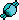
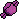
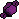
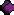
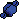
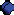

Open topic with navigation
You are here: Receiver Managing > Status > Position
Position
The Position tab displays the following information:
- The current receiver date and time synchronized to GPS system time.
- Solution type:
- Empty field – receiver cannot produce a solution (not enough satellites);
- Standalone – autonomous positions are computed using only the pseudo-range measurements. Differential corrections from a base station are not available;
- GNSS (Code-differential) – positions are acquired using only the pseudo-range measurements from base and rover receivers.
- RTK Float – positions are computed by RTK engine using the carrier phase and the pseudo-range measurements from base and rover receivers. Integer ambiguities, however, are NOT fixed (their float estimates were used instead).
- RTK Fixed – positions are computed by RTK engine using the carrier phase and the pseudo-range measurements from base and rover receivers. Integer ambiguities are fixed.
- Variable RTK Float – positions are computed by RTK engine using the carrier phase and the pseudo-range measurements from base and rover receivers. Integer ambiguities, however, were NOT fixed (their float estimates were used instead). The final accuracy of the solution is not better than the accuracy range of the Option Authorization File (OAF) for the rover receiver.
- Variable RTK Fixed – positions are computed by RTK engine using the carrier phase and the pseudo-range measurements from base and rover receivers. Integer ambiguities were fixed. The final accuracy of the solution is not better than the accuracy range of the Option Authorization File (OAF) for the rover receiver.
- Dion (Local) – positions are computed using the carrier phase increments of a single receiver. In this case the integer ambiguities are not fixed. High accuracy of the positioning is acquired in relation to a start point during short time interval.
- PPP Convergence – a convergence stage of calculation of autonomous coordinates of a single receiver, when using dual frequency code and carrier phase measurements and also the data on precise orbits and clocks of navigation satellites.
- PPP Float – positions are calculated using dual frequency code and carrier phase measurements of a single GNSS receiver and also the data on precise orbits and clocks of navigation satellites.
- OmniSTAR VBS – positions are calculated using L1 frequency code measurements of a single GNSS receiver and pseudo - range correction data from OmniSTAR's regional reference sites.
- OmniSTAR XP – positions are calculated using dual frequency code and carrier phase measurements of a single GNSS receiver and also the data on precise orbits and clocks of navigation satellites.
- OmniSTAR HP – positions are calculated using dual frequency code and carrier phase measurements of a single GNSS receiver and OmniSTAR High Performance corrections. These corrections are modeled on a worldwide network of reference stations using carrier phase measurement to improve accuracy.
Also, the following information can be added to a solution type:
- Smooth - The mode uses smoothing of some measurements by precise carrier phase measurements. This mode allows to eliminate jumps and sharp changes in positioning. There are the following combinations: Standalone (Smooth); DGNSS (Smooth);Variable RTK Float (Smooth); Variable RTK Fixed (Smooth); RTK Float (Smooth); RTK Fix (Smooth) and PPP float (Smooth);
- I-F (Iono - free combinations) - In this mode, dual frequency code and carrier phase measurements are used to form ionofree combinations in order to eliminate ionospheric error. By default, the mode is automatically activated if the baseline length is greater or equal to 10000 meters. You can update this value in the Adv. RTK dialog. There are the following combinations: Variable RTK Float (I-F); Variable RTK Fixed (I-F); RTK Float (I-F) and RTK Fix (I-F);
- W-L (Wide Lane combination) - In this mode Wide Lane carrier phase combinations (L1 minus L2) are formed and used in ambiguity resolution and positioning. By default, the mode is automatically activated in network RTK if the distance to the nearest physical reference station is greater than or equal to 40000 meters. There are the following combinations: Variable RTK Float (W-L); Variable RTK Fixed (W-L); RTK Float (W-L) and RTK Fix (W-L);
- mmGPS - In this mode a mmGPS+ system is connected to a rover. The RTK engine calculates the plane coordinates of the rover, and vertical coordinate is calculated by the mmGPS+ system. There are the following combinations: Variable RTK Float (mmGPS); Variable RTK Fixed (mmGPS); RTK Float (mmGPS) and RTK Fix (mmGPS);
- Network - this information is displayed if a GNSS rover receiver uses MAC corrections.
- WGS84 measured position of the antenna L1 phase center.
- PDOP value, a factor that depends solely upon satellite geometry, and is proportional to the estimated position uncertainty.
- HRMS and VRMS values, the RMS (the square root of the trace of position error covariance matrix) values of the horizontal and vertical coordinates, respectively.
- A distance between the rover and the base estimated by the RTK engine. The distance is shown in RTK positioning only.
- The number of satellites is used in the position computation. These satellites have the ‘wings’ on the satellite icon.
- The numbers of tracked satellites. These satellites do not have the ‘wings’ on the satellite icon.
Each satellite system is marked in a certain color.
| Satellite system |
Satellites are used
in position calculation
|
Tracked Satellites |
| GPS |
|
|
| GLONASS |
|
|
| Galileo |

|
|
| BeiDou |

|
|
| SBAS |

|

|
| QZSS |

|

|